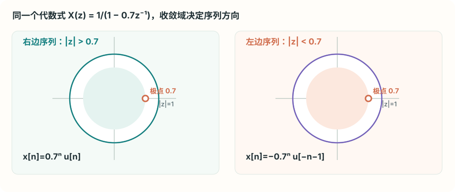
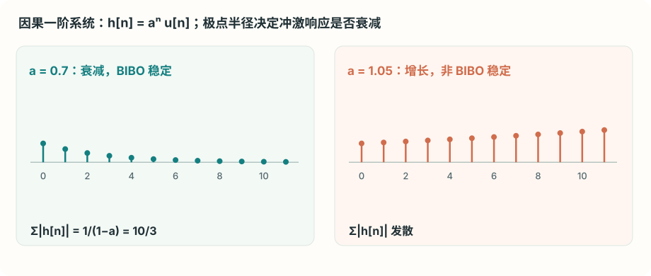

Signal · System · Insight / 05
Z 变换：用收敛域看懂滤波器稳定性
一个有理函数并不能独立指定离散序列：还要问它在哪些复数 z 上收敛。
同一条代数式，为什么可以对应两种序列？
对常见的代数式 1/(1−0.7z⁻¹)，有人立刻写出 0.7ⁿu[n]，似乎已经完成了逆 Z 变换。但另一条只在负时间存在的序列，竟然能得到完全一样的代数式。它们的差异由收敛域（ROC，region of convergence）保留下来。
因此，一份完整的双边 Z 变换说明至少包含两项信息：函数的代数式，以及让原求和级数收敛的复数 z 的集合。缺少后一项，时域方向与因果性就可能无法确定。
Z 变换为什么比单独的频谱更一般？
对整数时间序列 x[n]，双边 Z 变换定义为各样本乘以复指数权重 z⁻ⁿ 的总和：
式（1）：只有当右侧级数收敛时，该 z 才属于 ROC。
令 z=re^{jω}，其中 r≥0 是复平面上的半径，ω 是角度。当 r≠1 时，项 r⁻ⁿ 会对信号的正负时间尾部施加不同的指数权重。改变 r，可以使本来在单位圆上不收敛的序列在别处收敛。
如果 ROC 包含整个单位圆 |z|=1，将 z 限制为 e^{jω} 就得到通常的 DTFT。仅仅能把符号 z=e^{jω} 代入有理函数，并不能证明原始双边级数在单位圆收敛。
收敛域决定了左右时间的不同

令参数 a=0.7。对右边序列 x[n]=aⁿu[n]，只有 n≥0 项非零，因而 Z 变换化为几何级数 1+(a/z)+(a/z)²+…；它的比值模必须小于 1：
式（2）：对右边序列 aⁿu[n] 成立，绝不能丢掉 ROC。
若改成左边序列 x[n]=−aⁿu[−n−1]，仅 n≤−1 项非零，变换仍为同一个有理式，但这次 ROC 是 |z|<|a|。因此两组时域数据在代数式上“撞脸”，在收敛域上却完全不同。
怎样从差分方程走到 H(z)？
看一个可运行的一阶递归系统：y[n]=a·y[n−1]+x[n]。零初始状态下，两侧进行 Z 变换时，延迟一个样本的 y[n−1] 对应 z⁻¹Y(z)。整理可得：
式（3）：Y/X 是符号简写；实际是输出变换 Y(z) 除以输入变换 X(z)，选取因果零状态系统。
分母为 0 的 z=a 称为极点。因果实现对应极点外侧的 ROC。这个一阶因果系统的冲激响应是 h[n]=aⁿu[n]，所以判断 BIBO 稳定，只须检查级数 Σ |a|ⁿ 是否收敛。
极点向单位圆移动，时域发生什么变化？

当 |a|<1 时，因果右边 ROC 覆盖单位圆，冲激响应绝对可和，系统是 BIBO 稳定的。a=1 时响应不衰减，虽没有指数爆炸，绝对和仍发散，因而也不是 BIBO 稳定。a=1.05 时响应增长，更显著地失稳。
极点模为 0.7、−0.8 的系统都可以是因果且 BIBO 稳定；负极点会导致响应交替变号，不会单凭负号变成不稳定。高阶系统需要注意零极点约消、实现结构以及数值量化引入的差异，不能只做肉眼“一点小于一”的检查。
移动实极点，观察响应是否绝对可和
动手验证：调整正实极点 a（以百分比显示）
初始数值与所有必要说明均在本文给出；交互用于反复检查相同的计算。
本实验 a=v/100，只选择正实极点；当 a 接近 1，响应越长时间不衰减；超过 1 会增长。它帮助理解一阶模型，但不能替代真实高阶滤波器的完整根与 ROC 分析。
def impulse(a, count=100):
return [a**n for n in range(count)]
def bibo_stable(a):
return abs(a) < 1
assert bibo_stable(0.7) and bibo_stable(-0.8)
assert not bibo_stable(1.05)
assert abs(sum(impulse(0.7))-1/(1-0.7)) < 1e-10完整可执行示例（05_ztransform.py）；运行 python examples/05_ztransform.py。
如何避免 Z 域判断的四类错误
- 先确定是双边还是单边 Z 变换；这里讨论的都是双边 ROC。
- 已知有理式不等于已知逆变换；还必须补上 ROC。
- 单位圆是否在 ROC 内，决定 DTFT/频率响应是否能以该级数形式存在。
- 因果与 BIBO 稳定是不同限制；最常用的“极点全在单位圆内”是针对有理、因果且无不当消去问题的离散 LTI 系统。
练习：对于 a=−0.8、a=1 与 a=1.1，分别写出因果 ROC、冲激响应与 BIBO 稳定性，并解释为何 a=1 不算稳定。
核验来源
本文的等式是经典双边变换、理想采样与有限计算模型；没有把玩具实验的数字冒充成设备测试结论。查阅原始教材有助于完整理解它们各自的使用条件。
- MIT OCW · Digital Signal Processing study materials：采样、Z 变换与离散系统的标准推导。
- MIT OCW · Signal Processing: Continuous and Discrete：理想采样与频谱副本的数学条件。
- Oppenheim & Schafer · Discrete-Time Signal Processing：Z 域收敛域和 LTI 稳定性。
- Analog Devices · The z-Transform, Chapter 33：滤波器系统函数的工程理解。